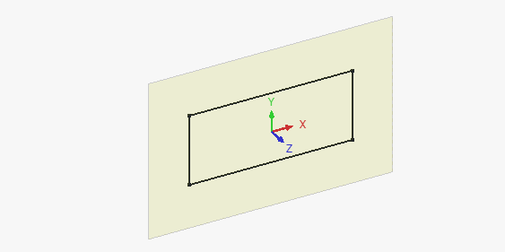

FreeCAD 1.1 is under development, there is no expected released date yet.
All images on this page must use the _relnotes_1.1 suffix
FreeCAD 1.1 was released on D Month Year, get it from the Download page. This page lists all new features and changes.
Older FreeCAD release notes can be found in the Feature list.
Placeholder for an eye-catching image selected by the admins from the user showcases forum.
General
User Interface
Further user interface improvements
Core system and API
Core

|
 Core Datum tools were implemented to create coordinate systems, datum planes, datum lines and datum points which can be attached and also used in Assembly. Core Datum tools were implemented to create coordinate systems, datum planes, datum lines and datum points which can be attached and also used in Assembly.
Pull request #18332
|

Click on the image if the animation does not start.
|
The  Transform tool was overhauled and now allows for precise inputs besides dragging in the 3D view. It is possible to align the interactive dragger to any element in the document and to transform the object in that local (U, V, W) coordinate system of the dragger, or in the global document coordinate system. The dragger can be aligned to the object's origin as before, and also to the center of mass of the object. It has a new feature to move the object (at the location of the dragger) to a target location in the document and flip the orientation. See all new options. Transform tool was overhauled and now allows for precise inputs besides dragging in the 3D view. It is possible to align the interactive dragger to any element in the document and to transform the object in that local (U, V, W) coordinate system of the dragger, or in the global document coordinate system. The dragger can be aligned to the object's origin as before, and also to the center of mass of the object. It has a new feature to move the object (at the location of the dragger) to a target location in the document and flip the orientation. See all new options.
Pull request #17564
|

Click on the image if the animation does not start.
|
Advanced options for axis-specific alignment of the Transform tool's Move to Other Object command have been added, enabling selective alignment by individual translation and rotation axes. This allows more precise control when matching an object's position and orientation to a target if only selected axis components should be considered.
Pull request #21642
|

Click on the image if the animation does not start.
|
Quick Measure displays more information based on the selected elements in the status bar. Besides length, angle, area and radius it now displays the diameter of closed circular elements and the axis distance. It works for single and multiple selected elements. There is also a menu option to disable it.
Pull request #23385 and Pull request #23399
|
| 
|
If the  Attachment Editor is open, the 2D object to be attached displays the origin and orientation (Show Placement property). For sketches, the sketch plane is also displayed (Show Plane property) Attachment Editor is open, the 2D object to be attached displays the origin and orientation (Show Placement property). For sketches, the sketch plane is also displayed (Show Plane property)
Pull request #23368
|

|
Origin planes are now enlarged when hovering the cursor over them. There is also a new Datum size preference to control the size of datum objects.
Pull request #23274
|

Click on the image if the animation does not start.
|
Clarify Selection tool was added based on Realthunder's Pick Geometry. It can be activated with the G, G keyboard shortcut, the context menu option, or (depending on the selected navigation style) by holding the left mouse button. It enables temporary transparency and shows a list of all nearby geometrical entities of different types (Object, Face, Edge, Vertex, Other) to allow the selection of hidden/interior objects when hovering over a model in 3D view.
Pull request #22029
|
Further Core improvements
- Support for boolean functions was added to expressions. Pull request #22506
- The default user data and configuration directory structures have changed to include the FreeCAD version number. This makes upgrading less risky, and enables safe use of older versions of FreeCAD alongside the new version. On startup there is now an option to migrate older configurations into the new versioned structure if a previous version is detected on the system. Pull request #23321
- Renaming dynamic properties was added. Pull request #21444, Pull request #21975 and Pull request #21976.
API
Removed Python API
Changed Python API
New Python API
- A new
FreeCAD.ApplicationDirectories static class is available providing features related to the new versioned directory structure.
Start
Addon Manager
- The Python dependency updater now works correctly if FreeCAD is installed as a snap package or as an AppImage. Pull request #19384, Pull request #19766 and Pull request #19814.
- The installation path of Python modules in the dependency updater is now shown as an absolute path for better readability. It is also shown correctly according to the FreeCAD installation method. Pull request #19828 and Pull request #19816.
- The Addon Manager is itself an addon, and can be updated by navigating to its page in the Addon Manager's addons list.
- Addons can now explicitly declare their support for particular FreeCAD versions, and multiple versions and branches are supported for each.
- Python dependencies now use a pip-constraints file to ensure conflict-free installation.
Assembly Workbench
Further Assembly improvements
- The new core datums can be used for attaching joints to assemble multiple parts. Pull request #18332
BIM Workbench

|
Interactive sun position and ray visualization were added to  Arch Site. The pysolar or ladybug Python module is required. Arch Site. The pysolar or ladybug Python module is required.
Pull request #22516
|
Further BIM improvements
- The
 Views panel got an overhaul and now has a section for all 2D views. Pull request #15836
Views panel got an overhaul and now has a section for all 2D views. Pull request #15836
- The Views panel got an activate and deactivate functionality for objects in the spatial decomposition section. Pull request #15836 and Pull request #21570
- NativeIFC support for 2D objects was added to BIM, allowing to embed 2D objects (linework, texts, dimensions) inside IFC files, as well as opening such files from other BIM apps. Pull request #16629
- The
 Schedule dialog gained support for simple arrays (e.g. non-nested). This enables regular and link arrays (both either expanded or not expanded) to be processed for further calculations in the BIM Schedule report. Pull request #19219
Schedule dialog gained support for simple arrays (e.g. non-nested). This enables regular and link arrays (both either expanded or not expanded) to be processed for further calculations in the BIM Schedule report. Pull request #19219
- The Continue option is now stored separately for each Draft and BIM command. Pull request #20748
- When adding BIM views to a TechDraw page, they now adhere to the page's scale, so that they have a sensible size. Pull request #20935
- The default zoom level for new BIM projects has been changed to be more adequate to the magnitudes used for architectural models. Pull request #20271
- When creating a new
 Level, selected objects in the tree view are now included in the level. Pull request #20180
Level, selected objects in the tree view are now included in the level. Pull request #20180
 Spaces can now be created from a single object (e.g. the interior faces of a wall based on a rectangle base). Pull request #20158
Spaces can now be created from a single object (e.g. the interior faces of a wall based on a rectangle base). Pull request #20158- FreeCAD standard groups can now be ignored when a model is exported to IFC. This is controlled by a preference and is the new default. Pull request #21583
- New Sill parameter has been added to
 Door and
Door and  Window objects to enable changing the sill height parametrically. Pull request #21005
Window objects to enable changing the sill height parametrically. Pull request #21005
- An option to preload all IfcTypes during IFC file import/open process has been added. Pull request #21450
- The
 Section Plane command received numerous fixes and usability improvements. Most notably the issue whereby rotating the section plane flipped the cut direction was fixed, and the ability to toggle the CutView from the Task panel was added. Pull request #23826
Section Plane command received numerous fixes and usability improvements. Most notably the issue whereby rotating the section plane flipped the cut direction was fixed, and the ability to toggle the CutView from the Task panel was added. Pull request #23826
- Double clicking on a BIM object that supports editing should open its task panel, instead of editing its label. Pull request #23805, Pull Request #23796 and Pull Request #24712
- The
 Remove command can now remove windows and doors from walls. Pull request #21561
Remove command can now remove windows and doors from walls. Pull request #21561
- When creating a custom window, the window's frame depth and related properties are described unambiguously to the user. Pull Request #21486
- When exporting models that contain a roof, that roof is no longer removed from the export. Pull Request #21409
- Double-clicking a Level now activates it and its working plane by default. Pull Request #21159
- The W, P shortcut was added to select the working plane. Pull Request #21157.
- Support for B-splines for structures, such as
 Slab, was added. Pull Request #21134
Slab, was added. Pull Request #21134
- Upon
 Wall creation, the wall's DataOffset property can additionally be entered. Pull Request #21042
Wall creation, the wall's DataOffset property can additionally be entered. Pull Request #21042
- The 2D View creation commands are now grouped together for improved usability. Pull Request #20941
CAM Workbench
Further CAM improvements
Draft Workbench
- Objects with two arrows can now have different start and end arrows. The size of an object's start and end arrows can also be different. Pull request #11941
- The
 Draft Edit command can now also handle Draft Labels. Pull request #13445
Draft Edit command can now also handle Draft Labels. Pull request #13445
- Support for relative file paths has been added to
 ShapeStrings and
ShapeStrings and  hatches. Pull request #17819 and Pull request #23294
hatches. Pull request #17819 and Pull request #23294
- The handling of Links in TechDraw DraftViews was fixed. Pull request #18175 and Pull request #19296
- The extrude mode of the
 Draft Trimex command has been made link-aware. It can now handle faces belonging to Links and objects in linked containers. And the point that defines the extrusion can be co-planar with the face. Pull request #18314 and Pull request #18320
Draft Trimex command has been made link-aware. It can now handle faces belonging to Links and objects in linked containers. And the point that defines the extrusion can be co-planar with the face. Pull request #18314 and Pull request #18320
- The Move, Rotate and Scale commands have been made link-aware as well. Pull request #18795
- If a Facebinder based on connected faces is extruded, an attempt is made to close its corners. The Sew property of the object must be set to true for this. Note that the code can fail for complex shapes. Pull request #18901
 Path arrays have been enhanced with several new properties. It is now possible to reverse the array, specify a fixed spacing unit, and use spacing patterns. Pull request #19017
Path arrays have been enhanced with several new properties. It is now possible to reverse the array, specify a fixed spacing unit, and use spacing patterns. Pull request #19017- Objects in layers can now have overrrides. Pull request #19207
- The
 Draft AddToLayer command, to quickly put objects in the correct layer, has been added. Pull request #19427
Draft AddToLayer command, to quickly put objects in the correct layer, has been added. Pull request #19427
- The TechDraw code that Draft Hatch relies on has been revised to also handle dashed lines in hatch patterns. Pull request #19458
- The Draft Downgrade and Draft Upgrade commands have been updated. Arrays can be downgraded (exploded), and new objects are put in the same container (Group, Part) as the original objects, and also receive the visual properties of the original objects. Pull request #19487 and Pull request #19685
- The
 Draft Polygon command now shows a preview (tracker) of an actual polygon, instead of a circle. Pull request #21045
Draft Polygon command now shows a preview (tracker) of an actual polygon, instead of a circle. Pull request #21045
- An Align to face checkbox has been added to the task panel of the Draft Hatch command. Pull request #21332
- An in-command shortcut D to recenter the working plane during commands has been added. Pull request #19728
- To simplify user input for single axis arrays, a linear mode option has been added to the task panel of the
 Draft OrthoArray command. Pull request #21602
Draft OrthoArray command. Pull request #21602
- Status bar hints were added for Draft Creation tools. Pull request #23244
Further Draft improvements
- The Draft Fillet command now works on selected edges, instead of the first edge of selected objects. Pull request #17945 and Pull request #18150
- The Draft AutoGroup and the Draft AddToGroup commands have been improved. The menus of both commands are sorted alphabetically. In the menu of the Draft AutoGroup command layers are separated from groups, and the New layer option prompts for a name and activates the layer. The actions of both commands have been made undoable. Pull request #18172 and Pull request #19312
- The position of the Scale multiplier field in the UI was improved (Draft SetStyle, Draft AnnotationStyleEditor and Draft Preferences). Pull request #18299
- The Draft Draft2Sketch command now also applies coincident constraints between edges from different source objects. Pull request #18805
- The radius, and chamfer and delete modes of the Draft Fillet command are stored. Pull request #19067
- An edit option has been added for Draft Clones. After double-clicking them in the Tree view their scaling can be modified in a task panel. Pull request #19477
- A planar face and an edge can now be selected for the Draft SelectPlane command. Pull request #19728
- For clarity the Filled checkbox in the task panel of for example Draft Wire has been relabeled to Make face. Pull request #19738
- The texts of newly created dimensions are now oriented automatically relative to the current working plane. A fine-tuning parameter is available to disable this behavior. Pull request #20072
- Near snap no longer overrides other snaps. On-object snaps, such as Midpoint snap and Endpoint snap, within snapRange of the cursor are now detected. Pull request #20118
- In the Draft Preferences a dropdown to select the font name for texts, dimensions and labels has been introduced. Previously the name had to be entered manually. Pull request #20400
- The Continue option is now stored separately for each Draft and BIM command. For the Draft Dimension command the old Continue option has been re-labeled to Chained mode for clarity, and a new Continue option has been added. Pull request #20748
- The Draft ShapeString command has seen several improvements. The font file is no longer a preference, instead the last selected file is stored. For the initial value of the font file an attempt is made to get a suitable file from the OS. This is primarily to help users who are not aware of font file locations. The last entered text and height are also stored. A Global option has been added to task panel. By unchecking that checkbox, coordinates can be specified in the working plane coordinate system. Finally, TrueType Collection font files (.ttc) can now also be selected, but only the first font in such a file can be used. Pull request #21004, Pull request #21054 and Pull request #21124
- The base object for a Draft Wire, Draft BSpline and Draft BezCurve has been changed to the Part::FeaturePython object. Pull request #21636
- Intersection snap now also detects intersections between faces and edges. Pull request #23352
- The Working plane orientation option has been removed from the Draft Scale command as it did not work properly. Pull request #23716
FEM Workbench

|
A popup menu was added to enable the selection of a proper solid if the selected face of CompSolid belongs to two solids. This makes it easier to select inner solids e.g. to apply materials to them.
Pull request #18812
|

|
ZRefine property was added to  Netgen making it possible to create simple extruded hex-dominated meshes when Quad Dominated property is enabled. However, it works only for first order elements unless the generated elements are all hexahedrons. Netgen making it possible to create simple extruded hex-dominated meshes when Quad Dominated property is enabled. However, it works only for first order elements unless the generated elements are all hexahedrons.
Pull request #19524
|

|
Pressure and heat flux loads as well as tie constraint and contact can now be applied to edges in 2D analyses with CalculiX. Similarly, body heat source and centrifugal force loads can be applied to faces of 2D models.
Pull request #23453 and Pull request #23551
|
Further FEM improvements
- Log verbosity and number of threads used for meshing can now be set for
 Gmsh and Netgen in the Preferences. Pull request #17699 and Pull request #18608
Gmsh and Netgen in the Preferences. Pull request #17699 and Pull request #18608
- The DataSecond Order Linear property and support for
 local refinement, previously only available for Gmsh, are now also available for the new Netgen implementation. Pull request #17170
local refinement, previously only available for Gmsh, are now also available for the new Netgen implementation. Pull request #17170
- Box and elliptical beam section types were added to
 FEM ElementGeometry1D. Pull request #15843
FEM ElementGeometry1D. Pull request #15843
- The
 Purge results tool now deletes all the results objects, not just the ones native to CalculiX. Pull request #18328
Purge results tool now deletes all the results objects, not just the ones native to CalculiX. Pull request #18328
 Tie constraint can now be applied also to shell faces. Pull request #18325
Tie constraint can now be applied also to shell faces. Pull request #18325- Output format (binary or ASCII) and saving of geometry IDs can now be set for Elmer, also in Preferences. Pull request #17972
- A smoothing option was added to the
 Contours filter. Pull request #18088
Contours filter. Pull request #18088
- The BucklingAccuracy parameter was added to
 CalculiX solver - it might be necessary to capture the first eigenvalue in some linear buckling analyses. Pull request #18790
CalculiX solver - it might be necessary to capture the first eigenvalue in some linear buckling analyses. Pull request #18790
- Now all FEM objects for which suppressing makes sense can be suppressed. Previously only constraints were suppressible. Pull request #18636
- Contact forces are now printed to ccx_dat_file in CalculiX analyses. Pull request #18840
- The
 MaterialReinforced tool now uses the
MaterialReinforced tool now uses the  new material editor. Pull request #18893
new material editor. Pull request #18893
- The
 Electrostatic potential boundary condition was extended to also support Neumann-type boundary condition and prescribe electric flux density. It now has a symbol too. Pull request #18514 and Pull request #19011
Electrostatic potential boundary condition was extended to also support Neumann-type boundary condition and prescribe electric flux density. It now has a symbol too. Pull request #18514 and Pull request #19011
- Thermal expansion reference temperature can now be defined for
 solid material in thermomechanical analyses with CalculiX. Pull request #19285
solid material in thermomechanical analyses with CalculiX. Pull request #19285
- The Fem.frdToVTK Python function was added allowing conversion of CalculiX's frd results files to VTK format used by ParaView. Pull request #19426
- The
 Current density boundary condition was improved. It now has two modes (Custom and Normal) and a symbol for the Normal mode. Pull request #19930
Current density boundary condition was improved. It now has two modes (Custom and Normal) and a symbol for the Normal mode. Pull request #19930
- Two new
 FEM examples were added - one for the newly implemented
FEM examples were added - one for the newly implemented  Static current equation (Joule heating) and one for
Static current equation (Joule heating) and one for  Rigid body constraint. Pull request #20007 and Pull request #20011
Rigid body constraint. Pull request #20007 and Pull request #20011
- The
 Heat flux load task panel was improved - radio buttons used to choose the heat flux type were replaced with a combo box. Pull request #20059
Heat flux load task panel was improved - radio buttons used to choose the heat flux type were replaced with a combo box. Pull request #20059
- The
 Magnetization boundary condition task panel was improved. Pull request #20055
Magnetization boundary condition task panel was improved. Pull request #20055
- Selection mode was added to Geometry reference selector in the task panels of Elmer equations. Pull request #20053
- The renameArrays Python function was added to rename selected
 results pipeline fields. Pull request #20411
results pipeline fields. Pull request #20411
- A CalculiX-related preference named Result object was added. If its checkbox Pipeline only is enabled, a newly refactored CalculiX solver object is added to the Analysis container when using the Solver CalculiX option. It has an updated task panel, doesn't generate
 CCX_Results objects (only the results pipeline object is created) and will be further developed. Pull request #20609
CCX_Results objects (only the results pipeline object is created) and will be further developed. Pull request #20609
- The Offset property was added to
 Shell Plate Thickness, making it possible to offset the expanded shell from the actual mesh. Pull request #22385
Shell Plate Thickness, making it possible to offset the expanded shell from the actual mesh. Pull request #22385
- Support for thermal
 contact with CalculiX was added via Enable Thermal Contact and Thermal Contact Conductance properties used to specify gap conductance. Pull request #22121
contact with CalculiX was added via Enable Thermal Contact and Thermal Contact Conductance properties used to specify gap conductance. Pull request #22121
- Support for hard and tied contact with CalculiX was added. Pull request #22513 and Pull request #23327
- Support for cavity radiation with CalculiX was added. Pull request #22593
- Support for amplitudes (time variation) for most mechanical and thermal boundary conditions and loads with CalculiX was added. There are new properties: Enable Amplitude and Amplitude Values. Pull request #22851
 Initial temperature can now be applied to a selected region (via the References property) in CalculiX analyses. Pull request #22864
Initial temperature can now be applied to a selected region (via the References property) in CalculiX analyses. Pull request #22864- The Glue property was added to the Netgen mesher. When enabled, a continuous mesh is created (this property is equivalent to Gmsh's Coherence Mesh). Pull request #23074
- Default Priority of Elmer equations now starts with 255 and decreases with each added equation. This way, the equations are solved in the order they were added to the tree. Pull request #22999
- CalculiX's membrane and truss elements are now supported and replace shell and beam elements respectively when the new ExcludeBendingStiffness property of the CalculiX solver is enabled. Pull request #22912 and Pull request #23224
- Displacements of rigid body reference point are now printed to ccx_dat_file. Pull request #23199
- Initial temperature can now be also used to prescribe temperature field in a static analysis step (with optional amplitude). Pull request #23277 and Pull request #23530
- Netgen can now be installed in the standard way mentioned on its download page and it is only necessary to point FreeCAD to the proper Python executable in the preferences (by default the Python executable specified in general Python preferences is used). Pull request #23613
- Some preferences related to mesh export now have better defaults. Namely, groups of nodes are enabled for the Gmsh mesher and export to INP files includes FEM elements only and groups by default. Pull request #23553
- Properties of the CalculiX solver are now grouped and time incrementation properties are more user-friendly (improved names, better defaults, easy switch between automatic and direct incrementation as well as no need to enable additional property to set non-default incrementation). Pull request #23494
- There is a new Pastix Mixed Precision property of the CalculiX solver. It's disabled by default so that mixed precision is not used for the PaStiX matrix solver to avoid issues with incorrect results of some analyses. Pull request #23539
- The
 Elmer solver's object and task panel were reworked similar to what was done before for CalculiX. It now works with the new implementation of Netgen. Moreover, ParaView PVD files can now be imported. Pull request #24912
Elmer solver's object and task panel were reworked similar to what was done before for CalculiX. It now works with the new implementation of Netgen. Moreover, ParaView PVD files can now be imported. Pull request #24912
Material Workbench
Further Material improvements
- Several new materials with physical properties were added to the material database:
Part Workbench
Further Part improvements
Part Design Workbench

Click on the image if the animation does not start.
|
The task panel of the  Hole tool was redesigned. The elements that are not relevant are now hidden, leaving only those useful for the current configuration, even if they are read-only. The panel is based on a diagram that provides direct context, and its elements have been placed near their area of effect. Hole tool was redesigned. The elements that are not relevant are now hidden, leaving only those useful for the current configuration, even if they are read-only. The panel is based on a diagram that provides direct context, and its elements have been placed near their area of effect.
Pull request #19052 and Pull request #19167
|

Click on the image if the animation does not start.
|
Added model taper support and more thread profiles to the Hole tool:
Pull request #15744
|

|
Transparent previews were added for Part Design additive and subtractive features. They can be disabled temporarily using task panel checkboxes or by default in the Preferences. There is also an optional highlight of the sketch used as a profile for Part Design operation.
Pull request #17249 and Pull request #23477
|

Click on the image if the animation does not start.
|
Interactive control draggers were added to Part Design features as a Google Summer of Code project. These allow to manipulate the values of the features by dragging in the 3D view.
Pull request #22880
|
Further Part Design improvements
- The origin feature in a Part Design body makes use of the new core datums. The appearance has been changed and the planes enlarge when creating a new sketch. As the orientation was wrong in older FreeCAD versions, files created with these versions need to be converted on opening. It can break files which reference the datums, and converted or new files created with 1.1 and above will be broken in 1.0 and below. Pull request #18126
- The
 Toggle freeze command is now available from Part Design. Pull request #18373
Toggle freeze command is now available from Part Design. Pull request #18373
- The performance of modeled threads from the Hole tool has been improved. Pull request #15744
- The initial angle for tapered threads in the Hole tool is now automatically set to the value from the ISO 7-1 and ASME B1.20.1 standards. Pull request #15744
- The Hole tool can now create holes based on sketch points and arcs in addition to circles. Pull request #20583
- SwitchToTask, formerly a fine-tuning parameter, can now be accessed from the Preferences Editor. It can be used to enable and disable automatic switching to the task panel when the Part Design Workbench is activated. Pull request #22136
- The
 Pad task panel was improved to have more options for Two sided mode. Pull request #21794
Pad task panel was improved to have more options for Two sided mode. Pull request #21794
- The preference to allow compounds (multiple solids) for Bodies is now enabled by default and not treated as an experimental feature anymore. Pull request #23003
- Transform tools can now use different spacing. Pull request #22389
Sketcher Workbench

Click on the image if the animation does not start.
|
The Make Internals property of sketches is now fully functional. If enabled, it displays faces for closed contours and makes it possible to select them for Part Design operations. The setting is still experimental but allows for a Master Sketch workflow in Part Design.
Pull request #22388
|
Further Sketcher improvements
- It is now possible to directly use external geometry as input for tools like offset or transform (array), for both external construction and defining geometry. Pull request #17615
- External geometry (projected or intersecting) is now by default real (defining) geometry (which does not need to be traced as in 1.0 and prior). It can be toggled to construction geometry as any other geometry Pull request #17736
- The Sketcher axes are now displayed with infinite length. Pull request #17312
- Sketches are now ordered alphabetically in the
 Attach sketch dialog. Pull request #16518
Attach sketch dialog. Pull request #16518
- Group dragging was added, making it possible to drag all the selected geometrical entities. Pull request #18273
- There is a new preference that, if checked, makes external geometry creation independent of the current construction mode - it is always created as reference geometry in such a case. Pull request #18697
- A preference was added to allow optional grouping of the
 Line and
Line and  Polyline tools. Pull request #20165
Polyline tools. Pull request #20165
- When selecting a constraint or a geometry element within the sketch, the corresponding Tasks panel list is now automatically scrolled to that object. Pull request #18859 and Pull request #20866
- Status bar hints were added for Sketcher geometry creation, constraint, edit and transform tools. Pull request #21632, Pull request #21751, Pull request #21806 and Pull request #21840
- Sketches are now automatically scaled after entering the first dimension to avoid breaking the shape when the first dimension is much larger/smaller than the current size of the geometry. Pull request #21084
- When creating geometry the mouse movement is ignored if a value is entered in the on-view-parameters (OVP). Tab cycles between OVP input boxes and Enter now confirms. Deleting the value of an OVP input box enables mouse movement for the dimension again. Pull request #20925
- Rendering of geometry lines is now prioritized over constraints so that dimensions lines don't cover the geometry. Pull request #21982
- Now all parts of dimension constraints can be selected, not only labels. Pull request #21920
- It is now possible to use the Ctrl+A shortcut (or Select All option in the Edit menu) to select all geometries within the sketch. Pull request #23289
- Box selection from left to right now uses another color than from right to left to indicate different behavior. Pull request #23261
- There is a new preference for constraint symbol size. Pull request #23366
Spreadsheet Workbench
Surface Workbench
TechDraw Workbench
Import and Export
- The DXF importer was significantly redesigned at the implementation and user level for a more predictable and consistent user experience. Pull Request #22251
- The DXF importer gained improved support for BLOCK and INSERT DXF entities. Pull Request #22045
- The DXF importer now reports import stats after an import. Pull Request #21985
- The alignment of sketches in SVG export and legacy DXF export has been fixed. Pull request #19765


{kind=link}
 Std DlgPreferences has been added. Pull request #15536
Std DlgPreferences has been added. Pull request #15536 Measure tool. Pull request #17717
Measure tool. Pull request #17717 Toggle transparency tool. Pull request #18986
Toggle transparency tool. Pull request #18986 Group will be added to it upon creation. Pull request #21902
Group will be added to it upon creation. Pull request #21902 Align to Selection command uses smaller rotations. Pull request #20088
Align to Selection command uses smaller rotations. Pull request #20088


{kind=link}


 Insert a new part tool was added making it possible to easily add new parts to assembly. Pull request #17922
Insert a new part tool was added making it possible to easily add new parts to assembly. Pull request #17922 Create Simulation tool was added making it possible to add motions to joints and create animations. Pull request #16414
Create Simulation tool was added making it possible to add motions to joints and create animations. Pull request #16414 Bill Of Materials (BOM) command can now output the values of given properties. Pull request #20732
Bill Of Materials (BOM) command can now output the values of given properties. Pull request #20732

{kind=link}
 CAM Shape experimental tool was replaced by Path from Shape with Tool Controller which is a significantly improved version of that tool based on a macro. Pull request #21108
CAM Shape experimental tool was replaced by Path from Shape with Tool Controller which is a significantly improved version of that tool based on a macro. Pull request #21108 New CAM Simulator was improved, including two additional buttons to reset the camera and decrease the speed. Pull request #21288, Pull request #21222 and more
New CAM Simulator was improved, including two additional buttons to reset the camera and decrease the speed. Pull request #21288, Pull request #21222 and more


 Set Tolerance tool was added to allow the creation of parametric copies of the selected objects with all contained tolerances set to at least a certain minimum value. Moreover, the
Set Tolerance tool was added to allow the creation of parametric copies of the selected objects with all contained tolerances set to at least a certain minimum value. Moreover, the  Check geometry tool now includes output about tolerances in the Shape Content tab. Pull request #17214
Check geometry tool now includes output about tolerances in the Shape Content tab. Pull request #17214 Loft and
Loft and  Sweep now create solids by default. Pull request #22098
Sweep now create solids by default. Pull request #22098 Part Import and
Part Import and  Part Export tools were removed from the menu. Pull request #22116
Part Export tools were removed from the menu. Pull request #22116


 Bold text,
Bold text,  Italic text and
Italic text and  Underline text have been added. Pull request #15556
Underline text have been added. Pull request #15556 Blend Curve tool. Pull request #21825
Blend Curve tool. Pull request #21825 Insert Area Annotation tool now properly accounts for holes in faces. Pull request #17740
Insert Area Annotation tool now properly accounts for holes in faces. Pull request #17740 LandmarkDimension and
LandmarkDimension and  LinkDimension tools were removed. Pull request #21483
LinkDimension tools were removed. Pull request #21483 dimension task panel. Pull request #23501
dimension task panel. Pull request #23501